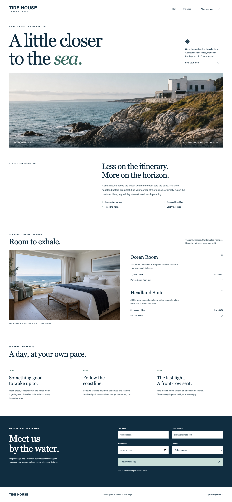
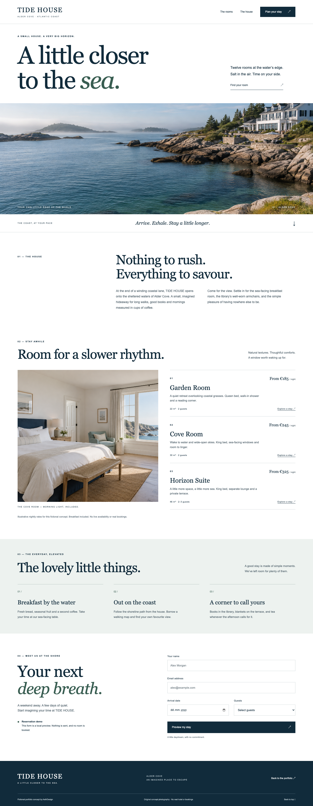
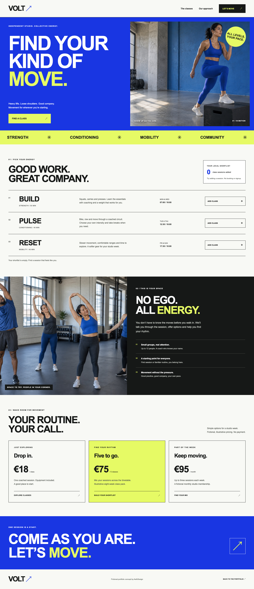
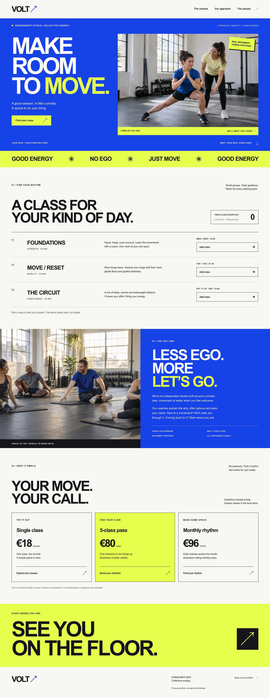
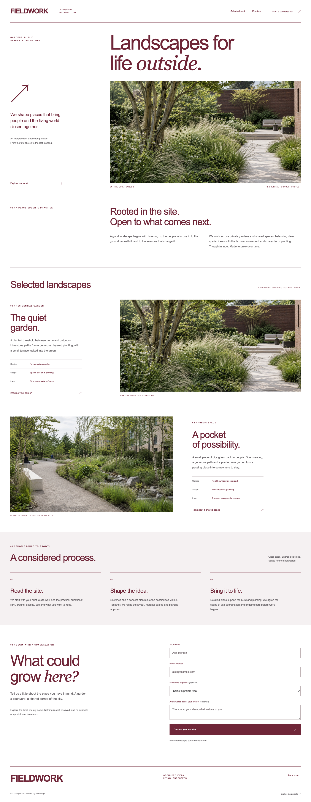
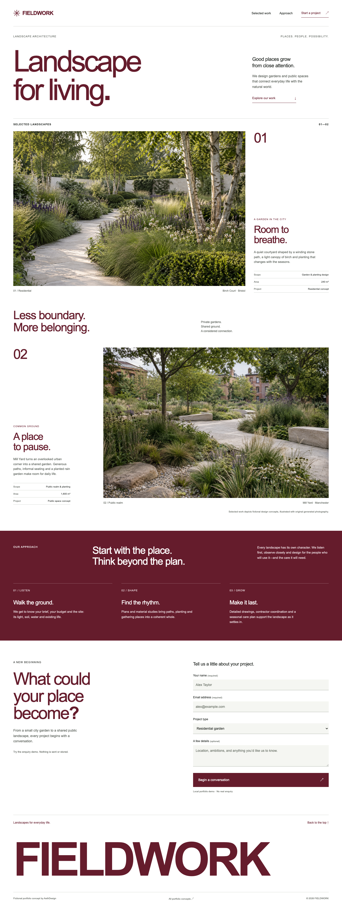

Single agentOpen concept

Engineering in public · 11 October 2026 · two paired workloads
We revised the delegation rules, built six new fictional business concepts, and separately tested error discovery and repair. The measured trade-offs stay visible.
One pair per workload. API equivalents exclude image generation and other tool charges, and do not measure subscription limits. New briefs and revised rules changed together; cross-pilot differences cannot isolate the policy effect.
Maritime editorial · boutique hospitality


Cobalt and acid yellow · independent fitness


Swiss editorial · landscape practice


| Recorded measure | Single agent | Adaptive delegation |
|---|---|---|
| Elapsed solver time | 15m 08s | 9m 27s |
| Input, including cached | 910,043 | 2,594,566 |
| Cached subset | 828,160 | 2,464,768 |
| Output, including reasoning | 35,583 | 41,522 |
| Standard API coding equivalent | $0.6024 | $0.9213 |
| Browser assertions | 58/58 | 58/58 |
Three direct page owners used the same root model at medium effort; the primary integrated the portfolio. Fresh scoped contexts avoided nested fan-out, but each helper still processed runtime instructions and its own growing history. Its primary also used more input than the single agent. Both solvers' rendered previews were sandbox-blocked; frozen outputs were graded afterward.
Both subjects delivered two original native images per page. The automatic single-agent counter conservatively flags its parallel batch; a separate six-return transcript reconstruction and original-file hashes verify the successful generations. Image backend, generation tokens and charges remain unknown.
A fresh anonymous reviewer scored the single portfolio 3.80/5 and adaptive 4.13/5. Adaptive was preferred for hotel and studio; single slightly for landscape. Mobile word joins, face-obscuring overlays and a clipped slogan remained visible. These are one reviewer's qualitative observations, not a general quality claim.
| Recorded measure | Single agent | Adaptive delegation |
|---|---|---|
| Elapsed solver time | 2m 43s | 2m 58s |
| Input, including cached | 198,013 | 821,969 |
| Output, including reasoning | 7,277 | 10,437 |
| Standard API coding equivalent | $0.1463 | $0.1553 |
Both found and repaired all eight seeded defects and retained all nine healthy groups. Adaptive also found and fixed one additional date-type contract defect, reported through two exports of the same parser. No submitted reports were unsupported; the duplicate manifestation is counted separately. Single left that additional defect present.
The separate defect workload tests explicit JavaScript hotel, fitness and landscape contracts. Hidden baseline, corrected oracle and healthy controls distinguish defect discovery from executable repair. Findings receive independent reproduction and matching; extra reports are reviewed on evidence. Actual team size is recorded, including choosing no helpers for small work.
Read visual scores, finding accuracy, actual topology and complete evidence ↗
One qualitative reviewer and one pair per workload limit conclusions. These frozen concepts demonstrate local interactions, not production bookings or services. No post-run repairs were applied before grading. Raw native logs remain private.